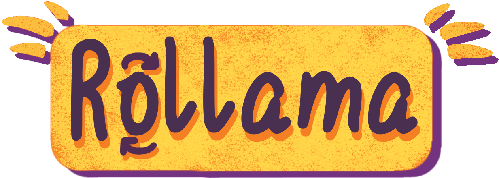
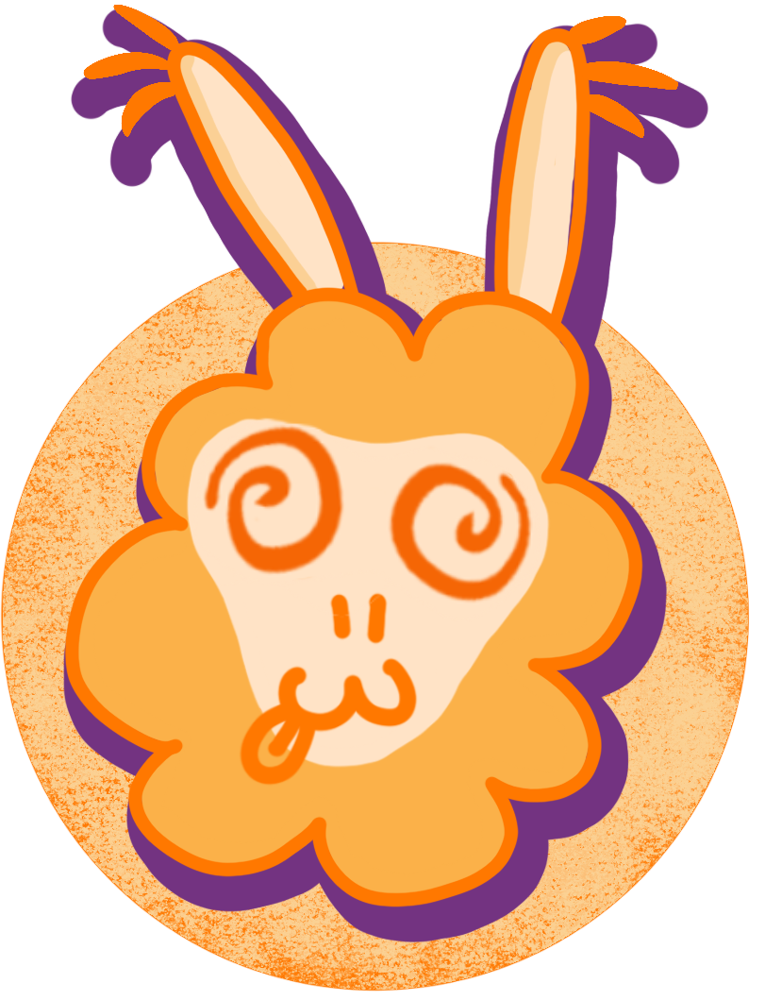

|
Name: _____________________
|
 |  | Focus: at / on / in (time) Task: fill the gap |
Teacher Tip: more specific = at | more general = in | (there are some exceptions) |
✏ |
||
|---|---|---|---|---|---|---|---|
Circle how confident you feel about this task:
|
Score: __________ |
||||||
| Focus: at / on / in (time) | ||
|---|---|---|